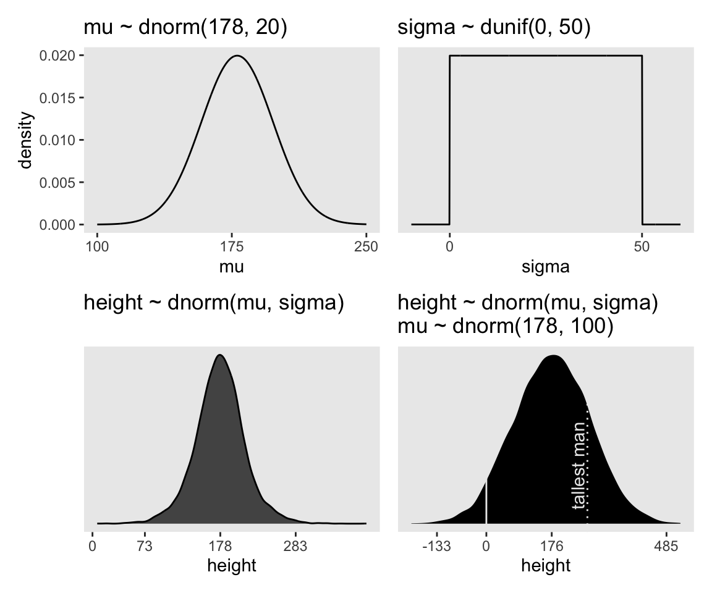

# Load
library(tidyverse)
library(patchwork)
library(tidybayes)
library(rstan)
library(posterior)
# Drop grid lines
theme_set(
theme_gray() +
theme(panel.grid = element_blank())
)4 Geocentric Models
Load the packages.
4.1 Why normal distributions are normal
4.1.1 Normal by addition.
4.1.2 Normal by multiplication.
4.1.3 Normal by log-multiplication.
4.1.4 Using Gaussian distributions.
4.1.4.1 Rethinking: Heavy tails.
4.1.4.2 Overthinking: Gaussian distribution.
4.2 A language for describing models
4.2.1 Re-describing the globe tossing model.
4.2.1.1 Overthinking: From model definition to Bayes’ theorem.
We can use grid approximation to work through our globe-tossing model.
# How many `p_grid` points would you like?
n_points <- 100
d <- tibble(
p_grid = seq(from = 0, to = 1, length.out = n_points),
w = 6,
n = 9) |>
mutate(prior = dunif(x = p_grid, min = 0, max = 1),
likelihood = dbinom(x = w, size = n, prob = p_grid)) |>
mutate(posterior = likelihood * prior / sum(likelihood * prior))
# What?
head(d)# A tibble: 6 × 6
p_grid w n prior likelihood posterior
<dbl> <dbl> <dbl> <dbl> <dbl> <dbl>
1 0 6 9 1 0 0
2 0.0101 6 9 1 8.65e-11 8.74e-12
3 0.0202 6 9 1 5.37e- 9 5.43e-10
4 0.0303 6 9 1 5.93e- 8 5.99e- 9
5 0.0404 6 9 1 3.23e- 7 3.26e- 8
6 0.0505 6 9 1 1.19e- 6 1.21e- 7In case you were curious, here’s what they look like.
d |>
pivot_longer(prior:posterior) |>
mutate(name = factor(name, levels = c("prior", "likelihood", "posterior"))) |>
ggplot(aes(x = p_grid, y = value, fill = name)) +
geom_area() +
scale_y_continuous(NULL, breaks = NULL) +
scale_fill_manual(values = c("blue", "red", "purple"), breaks = NULL) +
xlab("probability grid") +
facet_wrap(~ name, scales = "free")4.3 A Gaussian model of height
4.3.1 The data.
Load the Howell1 data (Howell, 2001, 2010).
data(Howell1, package = "rethinking")
d <- Howell1
rm(Howell1)
str(d)'data.frame': 544 obs. of 4 variables:
$ height: num 152 140 137 157 145 ...
$ weight: num 47.8 36.5 31.9 53 41.3 ...
$ age : num 63 63 65 41 51 35 32 27 19 54 ...
$ male : int 1 0 0 1 0 1 0 1 0 1 ...I’m not aware of a precis() function for numeric and graphical summaries of variables outside of McElreath’s rethinking package. We can, at least, get some of that information with summary().
summary(d) height weight age male
Min. : 53.98 Min. : 4.252 Min. : 0.00 Min. :0.0000
1st Qu.:125.09 1st Qu.:22.008 1st Qu.:12.00 1st Qu.:0.0000
Median :148.59 Median :40.058 Median :27.00 Median :0.0000
Mean :138.26 Mean :35.611 Mean :29.34 Mean :0.4724
3rd Qu.:157.48 3rd Qu.:47.209 3rd Qu.:43.00 3rd Qu.:1.0000
Max. :179.07 Max. :62.993 Max. :88.00 Max. :1.0000 We might make the histograms like this.
d |>
pivot_longer(everything()) |>
mutate(name = factor(name, levels = c("height", "weight", "age", "male"))) |>
ggplot(aes(x = value)) +
geom_histogram(bins = 10) +
facet_wrap(~ name, scales = "free", ncol = 1)If you’re curious, McElreath made those tiny histograms with help from Wickham’s histospark() function. Here’s the code.
sparks <- c("\u2581", "\u2582", "\u2583", "\u2585", "\u2587")
histospark <- function(x, width = 10) {
bins <- graphics::hist(x, breaks = width, plot = FALSE)
factor <- cut(
bins$counts / max(bins$counts),
breaks = seq(0, 1, length = length(sparks) + 1),
labels = sparks,
include.lowest = TRUE
)
paste0(factor, collapse = "")
}Here’s how it works.
histospark(d$weight)[1] "▁▂▃▂▂▂▂▅▇▇▃▂▁"We can use the dplyr::filter() function to make an adults-only data frame.
d2 <- d |>
filter(age >= 18)Our reduced d2 does indeed have \(n = 352\) cases.
d2 |>
count() n
1 3524.3.1.1 Overthinking: Data frames and indexes.
4.3.2 The model.
The likelihood for our model is
\[\text{heights}_i \sim \operatorname{Normal}(\mu, \sigma),\]
where the \(i\) subscript indexes the individual cases in the data. Our two parameters are \(\mu\) and \(\sigma\), which we will estimate using Bayes’ formula. Our prior for \(\mu\) will be
\[\mu \sim \operatorname{Normal}(178, 20),\]
and our prior for \(\sigma\) will be
\[\sigma \sim \operatorname{Uniform}(0, 50).\]
Here’s the shape of the prior for \(\mu\), \(\mathcal N(178, 20)\).
p1 <- tibble(x = seq(from = 100, to = 250, by = 0.1)) |>
mutate(density = dnorm(x = x, mean = 178, sd = 20)) |>
ggplot(aes(x = x, y = density)) +
geom_line() +
scale_x_continuous(breaks = seq(from = 100, to = 250, by = 75)) +
ggtitle("mu ~ dnorm(178, 20)")
p1And here’s the ggplot2 code for \(p(\sigma)\), a uniform distribution with a minimum value of 0 and a maximum value of 50. We don’t really need the \(y\)-axis when looking at the shapes of a density, so we’ll just remove it with scale_y_continuous().
p2 <- tibble(x = seq(from = -10, to = 60, by = 0.1)) |>
mutate(density = dunif(x = x, min = 0, max = 50)) |>
ggplot(aes(x = x, y = density)) +
geom_line() +
scale_x_continuous(breaks = c(0, 50)) +
scale_y_continuous(NULL, breaks = NULL) +
ggtitle("sigma ~ dunif(0, 50)")
p2We can simulate from both priors at once to get a prior probability distribution of heights.
n <- 1e4
set.seed(4)
sim <- tibble(sample_mu = rnorm(n = n, mean = 178, sd = 20),
sample_sigma = runif(n = n, min = 0, max = 50)) |>
mutate(height = rnorm(n = n, mean = sample_mu, sd = sample_sigma))
p3 <- sim|>
ggplot(aes(x = height)) +
geom_density(fill = "grey33") +
scale_x_continuous(breaks = c(0, 73, 178, 283)) +
scale_y_continuous(NULL, breaks = NULL) +
ggtitle("height ~ dnorm(mu, sigma)")
p3If you look at the \(x\)-axis breaks on the plot in McElreath’s lower left panel in Figure 4.3, you’ll notice they’re intentional. To compute the mean and 3 standard deviations above and below, you might do this.
sim |>
summarise(lower = mean(height) - sd(height) * 3,
mean = mean(height),
upper = mean(height) + sd(height) * 3) |>
mutate_all(round, digits = 1)# A tibble: 1 × 3
lower mean upper
<dbl> <dbl> <dbl>
1 73.9 177. 281.Our values are very close to his, but are off by just a bit due to simulation variation.
Here’s the work to make the lower right panel of Figure 4.3.
# Simulate
set.seed(4)
sim <- tibble(sample_mu = rnorm(n = n, mean = 178, sd = 100),
sample_sigma = runif(n = n, min = 0, max = 50)) |>
mutate(height = rnorm(n = n, mean = sample_mu, sd = sample_sigma))
# Compute the values we'll use to break on our x axis
breaks <- c(mean(sim$height) + c(-3, 0, 3) * sd(sim$height), 0) |> round(digits = 0)
# This is just for aesthetics
text <- tibble(
height = 272 - 25,
y = 0.0013,
label = "tallest man",
angle = 90)
# Plot
p4 <- sim |>
ggplot(aes(x = height)) +
geom_density(fill = "black", linewidth = 0) +
geom_vline(xintercept = 0, color = "grey92") +
geom_vline(xintercept = 272, color = "grey92", linetype = 3) +
geom_text(data = text,
aes(y = y, label = label, angle = angle),
color = "grey92") +
scale_x_continuous(breaks = breaks) +
scale_y_continuous(NULL, breaks = NULL) +
ggtitle("height ~ dnorm(mu, sigma)\nmu ~ dnorm(178, 100)")
p4You may have noticed how we were saving each of the four last plots as p1 through p4. Let’s combine the four to make our version of McElreath’s Figure 4.3.
(p1 + xlab("mu") | p2 + xlab("sigma")) / (p3 | p4)
On page 84, McElreath said his prior simulation indicated 4% of the heights would be below zero. Here’s how we might determine that percentage for our simulation.
sim |>
count(height < 0) |>
mutate(percent = 100 * n / sum(n))# A tibble: 2 × 3
`height < 0` n percent
<lgl> <int> <dbl>
1 FALSE 9571 95.7
2 TRUE 429 4.29Here’s the break down compared to the tallest man on record, Robert Pershing Wadlow (1918–1940).
sim |>
count(height < 272) |>
mutate(percent = 100 * n / sum(n))# A tibble: 2 × 3
`height < 272` n percent
<lgl> <int> <dbl>
1 FALSE 1761 17.6
2 TRUE 8239 82.44.3.2.1 Rethinking: A farewell to epsilon.
4.3.2.2 Overthinking: Model definition to Bayes’ theorem again.
4.3.3 Grid approximation of the posterior distribution.
This can be a handy preparatory step before we fit the model with stan().
n <- 200
d_grid <- crossing(
mu = seq(from = 140, to = 160, length.out = n),
sigma = seq(from = 4, to = 9, length.out = n))
# What?
glimpse(d_grid)Rows: 40,000
Columns: 2
$ mu <dbl> 140, 140, 140, 140, 140, 140, 140, 140, 140, 140, 140, 140, 140,…
$ sigma <dbl> 4.000000, 4.025126, 4.050251, 4.075377, 4.100503, 4.125628, 4.15…d_grid contains every combination of mu and sigma across their specified values. Instead of base-R sapply(), we’ll do the computations by making a custom function which we’ll then plug into purrr::map2().
grid_function <- function(mu, sigma) {
dnorm(x = d2$height, mean = mu, sd = sigma, log = TRUE) |>
sum()
}Now we’re ready to complete the tibble.
d_grid <- d_grid |>
mutate(log_likelihood = map2(.x = mu, .y = sigma, .f = grid_function)) |>
unnest(log_likelihood) |>
mutate(prior_mu = dnorm(x = mu, mean = 178, sd = 20, log = TRUE),
prior_sigma = dunif(x = sigma, min = 0, max = 50, log = TRUE)) |>
mutate(product = log_likelihood + prior_mu + prior_sigma) |>
mutate(probability = exp(product - max(product)))
# What?
head(d_grid)# A tibble: 6 × 7
mu sigma log_likelihood prior_mu prior_sigma product probability
<dbl> <dbl> <dbl> <dbl> <dbl> <dbl> <dbl>
1 140 4 -3813. -5.72 -3.91 -3822. 0
2 140 4.03 -3778. -5.72 -3.91 -3787. 0
3 140 4.05 -3743. -5.72 -3.91 -3753. 0
4 140 4.08 -3709. -5.72 -3.91 -3719. 0
5 140 4.10 -3676. -5.72 -3.91 -3686. 0
6 140 4.13 -3644. -5.72 -3.91 -3653. 0In the final d_grid, the probability vector contains the posterior probabilities across values of mu and sigma. We can make a contour plot with geom_contour().
d_grid |>
ggplot(aes(x = mu, y = sigma, z = probability)) +
geom_contour() +
labs(x = expression(mu),
y = expression(sigma)) +
coord_cartesian(xlim = range(d_grid$mu),
ylim = range(d_grid$sigma))We’ll make our heat map with geom_raster().
d_grid |>
ggplot(aes(x = mu, y = sigma, fill = probability)) +
geom_raster(interpolate = TRUE) +
scale_fill_viridis_c(option = "B") +
labs(x = expression(mu),
y = expression(sigma))4.3.4 Sampling from the posterior.
We can use dplyr::sample_n() to sample rows, with replacement, from d_grid.
set.seed(4)
d_grid_samples <- d_grid |>
sample_n(size = 1e4, replace = TRUE, weight = probability)
d_grid_samples |>
ggplot(aes(x = mu, y = sigma)) +
geom_point(size = 0.9, alpha = 1/15) +
scale_fill_viridis_c() +
labs(x = expression(mu[samples]),
y = expression(sigma[samples]))We can use pivot_longer() and then facet_wrap() to plot the densities for both mu and sigma at once.
d_grid_samples |>
pivot_longer(mu:sigma) |>
ggplot(aes(x = value)) +
geom_density(fill = "grey33") +
scale_y_continuous(NULL, breaks = NULL) +
xlab(NULL) +
facet_wrap(~ name, labeller = label_parsed, scales = "free")We’ll use the tidybayes package to compute their posterior modes and 95% HDIs.
d_grid_samples |>
pivot_longer(mu:sigma) |>
group_by(name) |>
mode_hdi(value)# A tibble: 2 × 7
name value .lower .upper .width .point .interval
<chr> <dbl> <dbl> <dbl> <dbl> <chr> <chr>
1 mu 155. 154. 155. 0.95 mode hdi
2 sigma 7.82 7.19 8.35 0.95 mode hdi 4.3.4.1 Overthinking: Sample size and the normality of \(\sigma\)’s posterior.
Here’s d3.
set.seed(4)
(d3 <- sample(d2$height, size = 20)) [1] 147.3200 154.9400 168.9100 156.8450 165.7350 151.7650 165.7350 156.2100
[9] 144.7800 154.9400 151.1300 147.9550 149.8600 162.5600 161.9250 164.4650
[17] 160.9852 151.7650 163.8300 149.8600For our first step using d3, we’ll redefine d_grid.
n <- 200
# Note we've redefined the ranges of `mu` and `sigma`
d_grid <- crossing(
mu = seq(from = 150, to = 170, length.out = n),
sigma = seq(from = 4, to = 20, length.out = n))Second, we’ll redefine our custom grid_function() function to operate over the height values of d3.
grid_function <- function(mu, sigma) {
dnorm(d3, mean = mu, sd = sigma, log = TRUE) |>
sum()
}Now we’ll use the amended grid_function() to make the posterior.
d_grid <- d_grid |>
mutate(log_likelihood = map2_dbl(.x = mu, .y = sigma, .f = grid_function)) |>
mutate(prior_mu = dnorm(x = mu, mean = 178, sd = 20, log = TRUE),
prior_sigma = dunif(x = sigma, min = 0, max = 50, log = TRUE)) |>
mutate(product = log_likelihood + prior_mu + prior_sigma) |>
mutate(probability = exp(product - max(product)))Next we’ll sample_n() and plot.
set.seed(4)
d_grid_samples <- d_grid |>
sample_n(size = 1e4, replace = TRUE, weight = probability)
d_grid_samples |>
ggplot(aes(x = mu, y = sigma)) +
geom_point(size = 0.9, alpha = 1/15) +
labs(x = expression(mu[samples]),
y = expression(sigma[samples]))Behold the updated densities.
d_grid_samples |>
pivot_longer(mu:sigma) |>
ggplot(aes(x = value)) +
geom_density(fill = "grey33", linewidth = 0) +
scale_y_continuous(NULL, breaks = NULL) +
xlab(NULL) +
facet_wrap(~ name, labeller = label_parsed, scales = "free")4.3.5 Finding the posterior distribution with quap()stan().
quap()Here we rewrite the statistical model, this time using font color to help differentiate the likelihood from the prior(s).
\[ \begin{align*} \color{red}{\text{heights}_i} & \color{red}\sim \color{red}{\operatorname{Normal}(\mu, \sigma)} && \color{red}{\text{likelihood}} \\ \color{blue}\mu & \color{blue}\sim \color{blue}{\operatorname{Normal}(178, 20)} && \color{blue}{\text{prior}} \\ \color{blue}\sigma & \color{blue}\sim \color{blue}{\operatorname{Uniform}(0, 50)} \end{align*} \]
For rstan, first we define the model code, which is a character string specifying the model with a series of blocks. Perhaps the most fundamental of these are the model, parameters, and model blocks. Note that whereas we typically use the # mark to make comments in R code, we use // for comments in rstan model code.
model_code <- '
data {
int<lower=1> n;
vector[n] height;
}
parameters {
real mu;
real<lower=0,upper=50> sigma;
}
model {
height ~ normal(mu, sigma); // Likelihood
mu ~ normal(178, 20); // Priors
sigma ~ uniform(0, 50);
}
'Next we use the tidybayes::compose_data() function to convert the data to a list, which is the format expected by rstan.
stan_data <- d2 |>
compose_data()
# What?
str(stan_data)List of 5
$ height: num [1:352(1d)] 152 140 137 157 145 ...
$ weight: num [1:352(1d)] 47.8 36.5 31.9 53 41.3 ...
$ age : num [1:352(1d)] 63 63 65 41 51 35 32 27 19 54 ...
$ male : int [1:352(1d)] 1 0 0 1 0 1 0 1 0 1 ...
$ n : int 352Note how the compose_data() function automatically added a variable called n, which tells the number of rows in the original data frame. If you look at the model_code above, you’ll see how I used that value when defining the vector of height values.
Now we fit the model with the stan() function.
m4.1 <- stan(
data = stan_data,
model_code = model_code,
# Default settings
chains = 4, iter = 2000, warmup = 1000,
# To make it reproducible
seed = 4)Here’s the model summary.
print(m4.1, probs = c(0.055, 0.945))Inference for Stan model: anon_model.
4 chains, each with iter=2000; warmup=1000; thin=1;
post-warmup draws per chain=1000, total post-warmup draws=4000.
mean se_mean sd 5.5% 94.5% n_eff Rhat
mu 154.59 0.01 0.41 153.94 155.25 2711 1
sigma 7.78 0.01 0.30 7.32 8.26 3292 1
lp__ -895.75 0.02 0.99 -897.62 -894.80 1726 1
Samples were drawn using NUTS(diag_e) at Wed Jul 31 18:17:42 2024.
For each parameter, n_eff is a crude measure of effective sample size,
and Rhat is the potential scale reduction factor on split chains (at
convergence, Rhat=1).Here’s the second model with the stronger prior for \(\mu\).
model_code <- '
data {
int<lower=1> n;
vector[n] height;
}
parameters {
real mu;
real<lower=0,upper=50> sigma;
}
model {
height ~ normal(mu, sigma);
mu ~ normal(178, 0.1); // This prior has been updated
sigma ~ uniform(0, 50);
}
'
m4.2 <- stan(
data = stan_data,
model_code = model_code,
chains = 4, iter = 2000, warmup = 1000,
seed = 4)Here’s the model summary.
print(m4.2, probs = c(0.055, 0.945))Inference for Stan model: anon_model.
4 chains, each with iter=2000; warmup=1000; thin=1;
post-warmup draws per chain=1000, total post-warmup draws=4000.
mean se_mean sd 5.5% 94.5% n_eff Rhat
mu 177.86 0.00 0.10 177.69 178.03 3207 1
sigma 24.60 0.02 0.94 23.13 26.14 3222 1
lp__ -1301.64 0.03 1.04 -1303.65 -1300.66 1461 1
Samples were drawn using NUTS(diag_e) at Wed Jul 31 18:18:11 2024.
For each parameter, n_eff is a crude measure of effective sample size,
and Rhat is the potential scale reduction factor on split chains (at
convergence, Rhat=1).4.3.5.1 Overthinking: Start values for quap rstan().
The Stan folks generally use the language of initial values, rather than start values. But I believe these are basically the same thing. Within the stan() function, you can set these with the init argument, about which you can learn more by executing ?stan in your console, or perhaps looking through this thread on the Stan forums.
4.3.6 Sampling from a quap()stan().
quap()The vcov() function does not work for models fit with stan().
vcov(m4.1) # This returns an error messageHowever, if you really wanted this information, you could get it after putting the HMC chains in a data frame. We do that with the as_draws_df() function from the posterior package.
draws <- as_draws_df(m4.1)
head(draws)# A draws_df: 6 iterations, 1 chains, and 3 variables
mu sigma lp__
1 155 7.5 -896
2 155 7.0 -899
3 154 7.6 -895
4 154 8.0 -895
5 155 7.6 -895
6 155 7.4 -895
# ... hidden reserved variables {'.chain', '.iteration', '.draw'}When McElreath extracts his posterior draws in the text, he generally calls the object post. Since several of the related functions from the posterior and tidybayes packages tend to use the language of draws, we’ll do the same and call our posterior draws objects draws.
Now select() the columns containing the draws from the desired parameters and feed them into the cov() function, which will return a variance/covariance matrix.
draws |>
select(mu:sigma) |>
cov() mu sigma
mu 0.16783765 -0.00255372
sigma -0.00255372 0.08895420Here are just the variances, and then the correlation matrix.
# Variances
draws |>
select(mu:sigma) |>
cov() |>
diag() mu sigma
0.1678377 0.0889542 # Correlation
draws |>
select(mu:sigma) |>
cor() mu sigma
mu 1.00000000 -0.02089996
sigma -0.02089996 1.00000000With our draws <- as_draws_df(m4.1) code from a few lines above, we’ve already produced the rstan version of what McElreath achieved with extract.samples() on page 90. However, what happened under the hood was different. Whereas rethinking used the mvnorm() function from the MASS package, with posterior::as_draws_df() we extracted the iterations of the HMC chains and put them in a data frame.
The summary() function doesn’t work for as_draws_df() objects quite the way precis() does for posterior data frames from the rethinking package. Behold the results.
draws |>
select(mu:sigma) |>
summary() mu sigma
Min. :153.4 Min. :6.841
1st Qu.:154.3 1st Qu.:7.565
Median :154.6 Median :7.765
Mean :154.6 Mean :7.776
3rd Qu.:154.9 3rd Qu.:7.967
Max. :156.2 Max. :8.891 However, the summarise_draws() function provides a nice summary for columns from as_draws_df().
draws |>
select(mu:sigma) |>
summarise_draws() |>
mutate_if(is.double, round, digits = 2)# A tibble: 2 × 10
variable mean median sd mad q5 q95 rhat ess_bulk ess_tail
<chr> <dbl> <dbl> <dbl> <dbl> <dbl> <dbl> <dbl> <dbl> <dbl>
1 mu 155. 155. 0.41 0.41 154. 155. 1 2750. 2433.
2 sigma 7.78 7.77 0.3 0.3 7.3 8.27 1 3328. 2087.The function comes with three handy default_*_meaures() helper function, which can help give a more focused output.
# default_summary_measures()
draws |>
select(mu:sigma) |>
summarise_draws(default_summary_measures()) |>
mutate_if(is.double, round, digits = 2)# A tibble: 2 × 7
variable mean median sd mad q5 q95
<chr> <dbl> <dbl> <dbl> <dbl> <dbl> <dbl>
1 mu 155. 155. 0.41 0.41 154. 155.
2 sigma 7.78 7.77 0.3 0.3 7.3 8.27# default_convergence_measures()
draws |>
select(mu:sigma) |>
summarise_draws(default_convergence_measures()) |>
mutate_if(is.double, round, digits = 2)# A tibble: 2 × 4
variable rhat ess_bulk ess_tail
<chr> <dbl> <dbl> <dbl>
1 mu 1 2750. 2433.
2 sigma 1 3328. 2087.# default_mcse_measures()
draws |>
select(mu:sigma) |>
summarise_draws(default_mcse_measures()) |>
mutate_if(is.double, round, digits = 2)# A tibble: 2 × 6
variable mcse_mean mcse_median mcse_sd mcse_q5 mcse_q95
<chr> <dbl> <dbl> <dbl> <dbl> <dbl>
1 mu 0.01 0.01 0.01 0.02 0.02
2 sigma 0.01 0.01 0.01 0.01 0.01You can also compute many of these statistics with explicit tidyverse code.
draws |>
pivot_longer(mu:sigma) |>
group_by(name) |>
summarise(mean = mean(value),
sd = sd(value),
`5.5%` = quantile(value, probs = 0.055),
`94.5%` = quantile(value, probs = 0.945)) |>
mutate_if(is.numeric, round, digits = 2)# A tibble: 2 × 5
name mean sd `5.5%` `94.5%`
<chr> <dbl> <dbl> <dbl> <dbl>
1 mu 155. 0.41 154. 155.
2 sigma 7.78 0.3 7.32 8.26And if you’re willing to drop the posterior \(\textit{SD}\)s, you can use tidybayes::mean_hdi(), too.
draws |>
pivot_longer(mu:sigma) |>
group_by(name) |>
mean_qi(value)# A tibble: 2 × 7
name value .lower .upper .width .point .interval
<chr> <dbl> <dbl> <dbl> <dbl> <chr> <chr>
1 mu 155. 154. 155. 0.95 mean qi
2 sigma 7.78 7.23 8.42 0.95 mean qi 4.3.6.1 Overthinking: Under the hood with multivariate sampling.
4.4 Linear prediction
Here’s our scatter plot of weight and height.
d2 |>
ggplot(aes(x = weight, y = height)) +
geom_point(alpha = 1/2, size = 1/2)4.4.0.1 Rethinking: What is “regression”?
4.4.1 The linear model strategy.
Like we did for our first model without a predictor, we’ll use font color to help differentiate between the likelihood and prior(s) of our new univariable model,
\[ \begin{align*} \color{red}{\text{height}_i} & \color{red}\sim \color{red}{\operatorname{Normal}(\mu_i, \sigma)} && \color{red}{\text{likelihood}} \\ \color{red}{\mu_i} & \color{red}= \color{red}{\alpha + \beta (\text{weight}_i - \overline{\text{weight}})} && \color{red}{\text{\{the linear model is just a special part of the likelihood\}} } \\ \color{blue}\alpha & \color{blue}\sim \color{blue}{\operatorname{Normal}(178, 20)} && \color{blue}{\text{prior(s)}} \\ \color{blue}\beta & \color{blue}\sim \color{blue}{\operatorname{Normal}(0, 10)} \\ \color{blue}\sigma & \color{blue}\sim \color{blue}{\operatorname{Uniform}(0, 50)}. \end{align*} \]
4.4.1.1 Probability of the data.
4.4.1.2 Linear model.
4.4.1.2.1 Rethinking: Nothing special or natural about linear models.
4.4.1.2.2 Overthinking: Units and regression models.
4.4.1.3 Priors.
Instead of using a loop to make our data for Figure 4.5, we’ll stay within the tidyverse.
# How many lines would you like?
n_lines <- 100
set.seed(2971)
lines <- tibble(
n = 1:n_lines,
a = rnorm(n = n_lines, mean = 178, sd = 20),
b = rnorm(n = n_lines, mean = 0, sd = 10)) |>
expand_grid(weight = range(d2$weight)) |>
mutate(height = a + b * (weight - mean(d2$weight)))
# What?
head(lines)# A tibble: 6 × 5
n a b weight height
<int> <dbl> <dbl> <dbl> <dbl>
1 1 191. -7.06 31.1 289.
2 1 191. -7.06 63.0 63.5
3 2 199. 0.839 31.1 187.
4 2 199. 0.839 63.0 214.
5 3 202. 3.93 31.1 147.
6 3 202. 3.93 63.0 272. Now we’ll plot the left panel from Figure 4.5.
p1 <- lines |>
ggplot(aes(x = weight, y = height, group = n)) +
geom_hline(yintercept = c(0, 272), linetype = 2:1, linewidth = 1/3) +
geom_line(alpha = 1/10) +
coord_cartesian(ylim = c(-100, 400)) +
ggtitle("b ~ dnorm(0, 10)")
p1Here’s what \(\operatorname{Log-Normal}(0, 1)\) looks like.
set.seed(4)
tibble(b = rlnorm(n = 1e4, mean = 0, sd = 1)) |>
ggplot(aes(x = b)) +
geom_density(fill = "grey92") +
coord_cartesian(xlim = c(0, 5))Here’s what happens when we compare \(\operatorname{Normal}(0, 1)\) with \(\log \big ( \operatorname{Log-Normal}(0, 1) \big)\).
set.seed(4)
tibble(rnorm = rnorm(n = 1e5, mean = 0, sd = 1),
`log(rlognorm)` = rlnorm(n = 1e5, mean = 0, sd = 1) |> log()) |>
pivot_longer(everything()) |>
ggplot(aes(x = value)) +
geom_density(fill = "grey92") +
coord_cartesian(xlim = c(-3, 3)) +
facet_wrap(~ name, nrow = 2)The formulas for the actual mean and standard deviation for the log-normal distribution itself are:
\[ \begin{align*} \text{mean} & = \exp \left (\mu + \frac{\sigma^2}{2} \right) & \text{and} \\ \text{standard deviation} & = \sqrt{[\exp(\sigma ^{2})-1] \; \exp(2\mu +\sigma ^{2})}. \end{align*} \]
Let’s try our hand at those formulas and compute the mean and standard deviation for \(\operatorname{Log-Normal}(0, 1)\).
mu <- 0
sigma <- 1
# Mean
exp(mu + (sigma^2) / 2)[1] 1.648721# SD
sqrt((exp(sigma^2) - 1) * exp(2 * mu + sigma^2))[1] 2.161197Let’s confirm with simulated draws from rlnorm().
set.seed(4)
tibble(x = rlnorm(n = 1e7, mean = 0, sd = 1)) |>
summarise(mean = mean(x),
sd = sd(x))# A tibble: 1 × 2
mean sd
<dbl> <dbl>
1 1.65 2.17But okay, “so what [do all these complications] earn us? Do the prior predictive simulation again, now with the Log-Normal prior:” (p. 96).
# Make a tibble to annotate the plot
text <-
tibble(weight = c(34, 43),
height = c(0 - 25, 272 + 25),
label = c("Embryo", "World's tallest person (272 cm)"))
# Simulate
set.seed(2971)
p2 <- tibble(
n = 1:n_lines,
a = rnorm(n = n_lines, mean = 178, sd = 20),
b = rlnorm(n = n_lines, mean = 0, sd = 1)) |>
expand_grid(weight = range(d2$weight)) |>
mutate(height = a + b * (weight - mean(d2$weight))) |>
# Plot
ggplot(aes(x = weight, y = height, group = n)) +
geom_hline(yintercept = c(0, 272), linetype = 2:1, linewidth = 1/3) +
geom_line(alpha = 1/10) +
geom_text(data = text,
aes(label = label),
size = 3) +
coord_cartesian(ylim = c(-100, 400)) +
ggtitle("log(b) ~ dnorm(0, 1)")
# Combine both panels
p1 | p2Thus we now have the full Figure 4.5.
4.4.1.3.1 Rethinking: What’s the correct prior?
4.4.1.3.2 Rethinking: Prior predictive simulation and \(p\)-hacking.
4.4.2 Finding the posterior distribution.
Now we get ready to actually fit the model
\[ \begin{align*} \text{height}_i & \sim \operatorname{Normal}(\mu_i, \sigma) \\ \mu_i & = \alpha + \beta (\text{weight}_i - \overline{\text{weight}}) \\ \alpha & \sim \operatorname{Normal}(178, 20) \\ \beta & \sim \operatorname{Log-Normal}(0, 1) \\ \sigma & \sim \operatorname{Uniform}(0, 50). \end{align*} \]
First, here’s the updated model_code.
model_code <- '
data {
int<lower=1> n;
real xbar; // New data point
vector[n] height;
vector[n] weight;
}
parameters {
real a;
real<lower=0> b;
real<lower=0,upper=50> sigma;
}
model {
vector[n] mu;
mu = a + b * (weight - xbar); // New model syntax
height ~ normal(mu, sigma);
a ~ normal(178, 20);
b ~ lognormal(0, 1);
sigma ~ uniform(0, 50);
}
'Next we need to add the mean of the weight column as a new value in the stan_data data list. We’ll call it xbar. Note how this is just a single value, not a vector.
stan_data$xbar <- mean(stan_data$weight)
# What?
str(stan_data)List of 6
$ height: num [1:352(1d)] 152 140 137 157 145 ...
$ weight: num [1:352(1d)] 47.8 36.5 31.9 53 41.3 ...
$ age : num [1:352(1d)] 63 63 65 41 51 35 32 27 19 54 ...
$ male : int [1:352(1d)] 1 0 0 1 0 1 0 1 0 1 ...
$ n : int 352
$ xbar : num 45Now we fit the model with stan(), as before.
m4.3 <- stan(
data = stan_data,
model_code = model_code,
seed = 4)Look at the print() summary.
print(m4.3, probs = c(0.055, 0.945))Inference for Stan model: anon_model.
4 chains, each with iter=2000; warmup=1000; thin=1;
post-warmup draws per chain=1000, total post-warmup draws=4000.
mean se_mean sd 5.5% 94.5% n_eff Rhat
a 154.60 0.00 0.27 154.17 155.02 4510 1
b 0.90 0.00 0.04 0.84 0.97 4079 1
sigma 5.11 0.00 0.19 4.83 5.43 3751 1
lp__ -749.09 0.03 1.19 -751.34 -747.82 2180 1
Samples were drawn using NUTS(diag_e) at Wed Jul 31 17:55:47 2024.
For each parameter, n_eff is a crude measure of effective sample size,
and Rhat is the potential scale reduction factor on split chains (at
convergence, Rhat=1).4.4.2.1 Rethinking: Everything that depends upon parameters has a posterior distribution.
4.4.2.2 Overthinking: Logs and exps, oh my.
With stan(), you can include exp() and other defined functions right in the model formula.
# Update the model
model_code <- '
data {
int<lower=1> n;
real xbar;
vector[n] height;
vector[n] weight;
}
parameters {
real a;
real<lower=0> log_b;
real<lower=0,upper=50> sigma;
}
model {
vector[n] mu;
mu = a + exp(log_b) * (weight - xbar); // Include `exp()` right in the formula
height ~ normal(mu, sigma);
a ~ normal(178, 20);
log_b ~ normal(0, 1);
sigma ~ uniform(0, 50);
}
'
# Fit the non-linear model
m4.3b <- stan(
data = stan_data,
model_code = model_code,
seed = 4)Check the summary.
print(m4.3b, probs = c(0.055, 0.945))Inference for Stan model: anon_model.
4 chains, each with iter=2000; warmup=1000; thin=1;
post-warmup draws per chain=1000, total post-warmup draws=4000.
mean se_mean sd 5.5% 94.5% n_eff Rhat
a 154.60 0.01 0.27 154.16 155.03 2790 1
log_b 0.01 0.00 0.01 0.00 0.04 3334 1
sigma 5.15 0.00 0.20 4.85 5.49 2865 1
lp__ -755.86 0.03 1.23 -758.14 -754.50 1692 1
Samples were drawn using NUTS(diag_e) at Wed Jul 31 17:58:15 2024.
For each parameter, n_eff is a crude measure of effective sample size,
and Rhat is the potential scale reduction factor on split chains (at
convergence, Rhat=1).We can exponentiate the log_b parameter to convert it back to the \(\beta\) scale.
as_draws_df(m4.3b) |>
transmute(b = exp(log_b)) |>
mean_qi(b)# A tibble: 1 × 6
b .lower .upper .width .point .interval
<dbl> <dbl> <dbl> <dbl> <chr> <chr>
1 1.01 1.00 1.05 0.95 mean qi 4.4.3 Interpreting the posterior distribution.
4.4.3.0.1 Rethinking: What do parameters mean?
4.4.3.1 Tables of marginal distributions.
We can get an exhaustive summary by simply inputting the stan() model fit object directly into summarise_draws().
m4.3 |>
summarise_draws()# A tibble: 4 × 10
variable mean median sd mad q5 q95 rhat ess_bulk
<chr> <dbl> <dbl> <dbl> <dbl> <dbl> <dbl> <dbl> <dbl>
1 a 155. 155. 0.269 0.266 154. 155. 1.00 4520.
2 b 0.905 0.904 0.0414 0.0419 0.837 0.973 1.00 4063.
3 sigma 5.11 5.10 0.190 0.189 4.82 5.44 1.00 3843.
4 lp__ -749. -749. 1.19 0.968 -751. -748. 1.00 2101.
# ℹ 1 more variable: ess_tail <dbl>Though not needed in this application, you can also use summarise_draws() after first calling as_draws_df().
m4.3 |>
as_draws_df() |>
summarise_draws()# A tibble: 4 × 10
variable mean median sd mad q5 q95 rhat ess_bulk
<chr> <dbl> <dbl> <dbl> <dbl> <dbl> <dbl> <dbl> <dbl>
1 a 155. 155. 0.269 0.266 154. 155. 1.00 4520.
2 b 0.905 0.904 0.0414 0.0419 0.837 0.973 1.00 4063.
3 sigma 5.11 5.10 0.190 0.189 4.82 5.44 1.00 3843.
4 lp__ -749. -749. 1.19 0.968 -751. -748. 1.00 2101.
# ℹ 1 more variable: ess_tail <dbl>Compute the variance/covariance matrix with as_draws_df() and cov().
m4.3 |>
as_draws_df() |>
select(mu:sigma) |>
cov() |>
round(digits = 3) a b sigma
a 0.072 0.000 0.001
b 0.000 0.002 0.000
sigma 0.001 0.000 0.036Here’s how the pairs() function works for a model fit with stan().
pairs(m4.3)The pairs() function takes several arguments which can alter its output.
pairs(m4.3,
cex = 1/10,
gap = 0.25,
panel = "points",
pars = c("a", "b", "sigma"),
pch = 19) 4.4.3.2 Plotting posterior inference against the data.
Here is the code for Figure 4.6. Note how we extract the posterior means first, save the values, and input those into the arguments within geom_abline().
# Compute, extract, and save the posterior means
a_stan <- summarise_draws(m4.3) |>
filter(variable == "a") |>
pull(mean)
b_stan <- summarise_draws(m4.3) |>
filter(variable == "b") |>
pull(mean)
# Add the `weight_c` column
d2 <- d2 |>
mutate(weight_c = weight - mean(weight))
# Plot
d2 |>
ggplot(aes(x = weight_c, y = height)) +
geom_point(shape = 1, size = 2) +
geom_abline(intercept = a_stan, slope = b_stan,
color = "royalblue", linewidth = 1) +
scale_x_continuous("weight",
breaks = 3:6 * 10 - mean(d2$weight),
labels = 3:6 * 10)4.4.3.3 Adding uncertainty around the mean.
It’s easy to extract all the posterior draws from a stan() model with as_draws_df().
as_draws_df(m4.3) |>
glimpse()Rows: 4,000
Columns: 7
$ a <dbl> 154.4306, 154.5734, 154.4522, 154.3828, 154.4476, 154.4773,…
$ b <dbl> 0.9446215, 0.9187776, 0.9058252, 0.8661769, 0.9061876, 0.89…
$ sigma <dbl> 4.900342, 5.098300, 4.958741, 5.076583, 5.114658, 5.211086,…
$ lp__ <dbl> -748.7815, -747.6992, -747.9981, -748.3969, -747.8140, -747…
$ .chain <int> 1, 1, 1, 1, 1, 1, 1, 1, 1, 1, 1, 1, 1, 1, 1, 1, 1, 1, 1, 1,…
$ .iteration <int> 1, 2, 3, 4, 5, 6, 7, 8, 9, 10, 11, 12, 13, 14, 15, 16, 17, …
$ .draw <int> 1, 2, 3, 4, 5, 6, 7, 8, 9, 10, 11, 12, 13, 14, 15, 16, 17, …As far as the workflow in McElreath’s R code 4.48 and 4.49 goes, we’ll do this in a series of steps. First, we make a tibble with a column showing the four levels of n, and then save the subset versions of the d2 data in a nested column by way of map(). We save the results as n_df.
n_df <- tibble(n = c(10, 50, 150, 352)) |>
mutate(data = map(.x = n, .f =~ d2 |>
slice(1:.x)))
# What?
print(n_df)# A tibble: 4 × 2
n data
<dbl> <list>
1 10 <df [10 × 5]>
2 50 <df [50 × 5]>
3 150 <df [150 × 5]>
4 352 <df [352 × 5]>Now make a stan_data column with the data in a list for rstan. Note how we included the xbar component in the list by defining it right within compose_data().
n_df <- n_df |>
mutate(stan_data = map(.x = data, .f =~ .x |>
compose_data(xbar = mean(.x$weight))))
# What?
print(n_df)# A tibble: 4 × 3
n data stan_data
<dbl> <list> <list>
1 10 <df [10 × 5]> <named list [7]>
2 50 <df [50 × 5]> <named list [7]>
3 150 <df [150 × 5]> <named list [7]>
4 352 <df [352 × 5]> <named list [7]>Next, redefine the model_code object.
model_code <- '
data {
int<lower=1> n;
real xbar; // new data point
vector[n] height;
vector[n] weight;
}
parameters {
real a;
real<lower=0> b;
real<lower=0,upper=50> sigma;
}
model {
vector[n] mu;
mu = a + b * (weight - xbar);
height ~ normal(mu, sigma);
a ~ normal(178, 20);
b ~ lognormal(0, 1);
sigma ~ uniform(0, 50);
}
'Unlike with the models above where we compiled and samples from the models all in one stan() call, here we’ll use a 2-step procedure. For the first step, we compile the model_code object with the stan_model() function. We’ll save the results as an object called stan_dso.
stan_dso <- stan_model(model_code = model_code)The stan_model() function returns an object of S4 class stanmodel, and the code is compiled into a so-called dynamic shared object (DSO), which is why we’ve save our results as stan_dso. To learn more, execute ?stan_model for the documentation.
For the second step, we sample from the stan_dso object with the sampling() function, saving the model fits in the sampling column.
n_df <- n_df |>
mutate(sampling = map(.x = stan_data,
.f =~ sampling(
data = .x,
object = stan_dso,
seed = 4)))Now extract 20 rows from the model fits with as_draws_df() and slice_sample().
set.seed(1)
n_df <- n_df |>
mutate(as_draws_df = map(.x = sampling,
.f =~ as_draws_df(.x) |>
slice_sample(n = 20)))
# What?
print(n_df)# A tibble: 4 × 5
n data stan_data sampling as_draws_df
<dbl> <list> <list> <list> <list>
1 10 <df [10 × 5]> <named list [7]> <stanfit[,4,4]> <draws_df [20 × 7]>
2 50 <df [50 × 5]> <named list [7]> <stanfit[,4,4]> <draws_df [20 × 7]>
3 150 <df [150 × 5]> <named list [7]> <stanfit[,4,4]> <draws_df [20 × 7]>
4 352 <df [352 × 5]> <named list [7]> <stanfit[,4,4]> <draws_df [20 × 7]>We’ll need to extract the xbar values for easy tidyverse wrangling, and then we’ll adjust the n column for nicer plot formatting.
n_df <- n_df |>
mutate(xbar = map_dbl(.x = stan_data,
.f =~ .x[["xbar"]]),
n = str_c("italic(n)==", n) |>
factor(levels = str_c("italic(n)==", c(10, 50, 150, 352))))
# What?
print(n_df)# A tibble: 4 × 6
n data stan_data sampling as_draws_df xbar
<fct> <list> <list> <list> <list> <dbl>
1 italic(n)==10 <df [10 × 5]> <named list> <stanfit[,4,4]> <draws_df> 45.7
2 italic(n)==50 <df [50 × 5]> <named list> <stanfit[,4,4]> <draws_df> 44.9
3 italic(n)==150 <df [150 × 5]> <named list> <stanfit[,4,4]> <draws_df> 45.5
4 italic(n)==352 <df [352 × 5]> <named list> <stanfit[,4,4]> <draws_df> 45.0Now we plot.
n_df |>
select(n, data, xbar) |>
unnest(data) |>
ggplot(aes(x = weight - xbar, y = height)) +
geom_point() +
geom_abline(data = n_df |>
select(n, xbar, as_draws_df) |>
unnest(as_draws_df),
aes(intercept = a, slope = b,
group = .draw),
color = "royalblue", linewidth = 1/4) +
scale_x_continuous("weight",
breaks = 3:6 * 10 - mean(d2$weight),
labels = 3:6 * 10) +
facet_wrap(~ n, labeller = label_parsed)
4.4.3.4 Plotting regression intervals and contours.
Since we used weight_c to fit our model, we might first want to understand what exactly the mean value is for weight.
mean(d2$weight)[1] 44.99049This is the same as the xbar value saved in the stan_data object from above.
stan_data$xbar[1] 44.99049If we’re interested in \(\mu\) at weight = 50, that implies we’re also interested in \(\mu\) at weight_c + 5.01. Within the context of our model, we compute this with \(\alpha + \beta \cdot 5.01\). Here we’ll extract the HMC draws from m4.3 with as_draws_df(), and then define the mu_at_50 column using the same basic algebra McElreath used in his R code 4.50.
draws <- as_draws_df(m4.3) |>
mutate(mu_at_50 = a + b * (50 - stan_data$xbar))
# What?
head(draws)# A draws_df: 6 iterations, 1 chains, and 5 variables
a b sigma lp__ mu_at_50
1 154 0.94 4.9 -749 159
2 155 0.92 5.1 -748 159
3 154 0.91 5.0 -748 159
4 154 0.87 5.1 -748 159
5 154 0.91 5.1 -748 159
6 154 0.90 5.2 -748 159
# ... hidden reserved variables {'.chain', '.iteration', '.draw'}Here is a version McElreath’s Figure 4.8 density plot.
draws |>
ggplot(aes(x = mu_at_50)) +
geom_density(adjust = 1/2, fill = "gray65", linewidth = 0) +
scale_y_continuous(NULL, breaks = NULL) +
xlab(expression(mu["height | weight = 50"]))
We’ll use mean_hdi() to get both 89% and 95% HDIs, along with the mean.
draws |>
mean_hdi(mu_at_50, .width = c(0.89, 0.95))# A tibble: 2 × 6
mu_at_50 .lower .upper .width .point .interval
<dbl> <dbl> <dbl> <dbl> <chr> <chr>
1 159. 159. 160. 0.89 mean hdi
2 159. 158. 160. 0.95 mean hdi The fitted() functions are not available for stan() models. However, we can adjust our as_draws_df() output (i.e., draws) with expand_grid() to compute the fitted values by hand. We save the results as draws_fitted_df.
draws_fitted_df <- draws |>
select(.draw, a, b, sigma) |>
expand_grid(weight = 25:70) |>
mutate(height = a + b * (weight - stan_data$xbar))
# What?
head(draws_fitted_df)# A tibble: 6 × 6
.draw a b sigma weight height
<int> <dbl> <dbl> <dbl> <int> <dbl>
1 1 154. 0.945 4.90 25 136.
2 1 154. 0.945 4.90 26 136.
3 1 154. 0.945 4.90 27 137.
4 1 154. 0.945 4.90 28 138.
5 1 154. 0.945 4.90 29 139.
6 1 154. 0.945 4.90 30 140.Here’s how to use that output to make Figure 4.9.
p1 <- draws_fitted_df |>
filter(.draw <= 100) |>
ggplot(aes(x = weight, y = height)) +
geom_point(alpha = 0.05, color = "navyblue", size = 1/2)
p2 <- d2 |>
ggplot(aes(x = weight, y = height)) +
geom_point(alpha = 1/2, size = 1/2) +
stat_lineribbon(data = draws_fitted_df,
.width = 0.89,
color = "royalblue", fill = alpha("royalblue", alpha = 1/2),
linewidth = 1/3) +
scale_y_continuous(NULL, breaks = NULL)
# Combine, adjust, and display
(p1 | p2) &
coord_cartesian(xlim = range(d2$weight),
ylim = range(d2$height))4.4.3.4.1 Rethinking: Overconfident intervals.
4.4.3.4.2 Overthinking: How link works.
With a brms-based workflow, we can use functions like base-R fitted() and tidybayes convenience functions like add_epred_draws() in places where McElreath used link() in the text. Sadly, those functions aren’t available for models fit with rstan. Either we hand-compute the expected values with a workflow like above, or in later chapters we’ll see how to build them into the Stan model via the generated quantities block.
4.4.3.5 Prediction intervals.
We can add posterior-predictions to draws_fitted_df by way of the rnorm() function.
draws_fitted_df <- draws_fitted_df |>
mutate(height_pred = rnorm(n = n(), mean = height, sd = sigma))
# What?
head(draws_fitted_df)# A tibble: 6 × 7
.draw a b sigma weight height height_pred
<int> <dbl> <dbl> <dbl> <int> <dbl> <dbl>
1 1 154. 0.945 4.90 25 136. 142.
2 1 154. 0.945 4.90 26 136. 140.
3 1 154. 0.945 4.90 27 137. 144.
4 1 154. 0.945 4.90 28 138. 134.
5 1 154. 0.945 4.90 29 139. 139.
6 1 154. 0.945 4.90 30 140. 136.Here’s Figure 4.10.
d2 |>
ggplot(aes(x = weight, y = height)) +
geom_point(alpha = 1/2, size = 1/2) +
# This is new
stat_lineribbon(data = draws_fitted_df,
aes(y = height_pred),
.width = 0.89,
fill = alpha("royalblue", alpha = 1/3),
linewidth = 0) +
stat_lineribbon(data = draws_fitted_df,
.width = 0.89,
color = "royalblue", fill = alpha("royalblue", alpha = 1/3),
linewidth = 1/3) +
coord_cartesian(xlim = range(d2$weight),
ylim = range(d2$height))4.4.3.5.1 Rethinking: Two kinds of uncertainty.
4.4.3.5.2 Overthinking: Rolling your own sim.
With a brms-based workflow, we can use functions like base-R predict() and tidybayes convenience functions like add_predicted_draws() in places where McElreath used sim() in the text. Sadly, those functions aren’t available for models fit with rstan. Either we hand-compute the expected values with a workflow like above, or in later chapters we’ll see how to build them into the Stan model via the generated quantities block.
4.5 Curves from lines
4.5.1 Polynomial regression.
Remember d?
glimpse(d)Rows: 544
Columns: 4
$ height <dbl> 151.7650, 139.7000, 136.5250, 156.8450, 145.4150, 163.8300, 149…
$ weight <dbl> 47.82561, 36.48581, 31.86484, 53.04191, 41.27687, 62.99259, 38.…
$ age <dbl> 63.0, 63.0, 65.0, 41.0, 51.0, 35.0, 32.0, 27.0, 19.0, 54.0, 47.…
$ male <int> 1, 0, 0, 1, 0, 1, 0, 1, 0, 1, 0, 1, 0, 0, 0, 1, 1, 0, 1, 0, 0, …McElreath suggested we plot height against weight using the full sample.
d |>
ggplot(aes(x = weight, y = height)) +
geom_point(alpha = 2/3, shape = 1, size = 1.5) +
annotate(geom = "text",
x = 42, y = 115,
label = "This relation is\nvisibly curved.")We might standardize our weight variable like so.
d <- d |>
mutate(weight_s = (weight - mean(weight)) / sd(weight)) |>
mutate(weight_s2 = weight_s^2)While we were at it, we just went ahead and computed the weight_s2 variable. We can express our statistical model as
\[ \begin{align*} \text{height}_i & \sim \operatorname{Normal}(\mu_i, \sigma) \\ \mu_i & = \alpha + \beta_1 \text{weight-s}_i + \beta_2 \text{weight-s}^2_i \\ \alpha & \sim \operatorname{Normal}(178, 20) \\ \beta_1 & \sim \operatorname{Log-Normal}(0, 1) \\ \beta_2 & \sim \operatorname{Normal}(0, 1) \\ \sigma & \sim \operatorname{Uniform}(0, 50). \end{align*} \]
Define and save the quadratic_model_code.
quadratic_model_code <- '
data {
int<lower=1> n;
vector[n] height;
vector[n] weight_s;
}
parameters {
real a;
real<lower=0> b1;
real b2;
real<lower=0,upper=50> sigma;
}
model {
vector[n] mu;
mu = a + b1 * weight_s + b2 * weight_s^2;
height ~ normal(mu, sigma);
a ~ normal(178, 20);
b1 ~ lognormal(0, 1);
b2 ~ normal(0, 1);
sigma ~ uniform(0, 50);
}
'Update the stan_data to include weight_s.
stan_data <- d |>
select(height, weight_s) |>
compose_data()
# What?
str(stan_data)List of 3
$ height : num [1:544(1d)] 152 140 137 157 145 ...
$ weight_s: num [1:544(1d)] 0.8299 0.0595 -0.2545 1.1843 0.385 ...
$ n : int 544Fit the quadratic model, m4.5.
m4.5 <- stan(
data = stan_data,
model_code = quadratic_model_code,
seed = 4)Check the summary.
print(m4.5, probs = c(0.055, 0.945))Inference for Stan model: anon_model.
4 chains, each with iter=2000; warmup=1000; thin=1;
post-warmup draws per chain=1000, total post-warmup draws=4000.
mean se_mean sd 5.5% 94.5% n_eff Rhat
a 146.05 0.01 0.37 145.45 146.65 2286 1
b1 21.74 0.01 0.30 21.27 22.22 2707 1
b2 -7.79 0.01 0.28 -8.24 -7.33 2381 1
sigma 5.81 0.00 0.18 5.54 6.10 3165 1
lp__ -1263.66 0.03 1.44 -1266.31 -1262.00 1880 1
Samples were drawn using NUTS(diag_e) at Wed Jul 31 18:01:20 2024.
For each parameter, n_eff is a crude measure of effective sample size,
and Rhat is the potential scale reduction factor on split chains (at
convergence, Rhat=1).Here’s how to make the middle panel of Figure 4.11.
# Extract the HMC draws and wrangle
p2 <- as_draws_df(m4.5) |>
expand_grid(weight_s = seq(from = min(d$weight_s), to = max(d$weight_s), length.out = 50)) |>
mutate(fitted = a + b1 * weight_s + b2 * weight_s^2) |>
mutate(predict = rnorm(n = n(), mean = fitted, sd = sigma)) |>
# Plot
ggplot(aes(x = weight_s)) +
geom_point(data = d,
aes(y = height),
alpha = 1/2, size = 1/2) +
stat_lineribbon(aes(y = predict),
.width = 0.89,
fill = alpha("royalblue", alpha = 1/3),
linewidth = 0) +
stat_lineribbon(aes(y = fitted),
.width = 0.89,
color = "royalblue", fill = alpha("royalblue", alpha = 1/3),
linewidth = 1/3) +
scale_y_continuous(NULL, breaks = NULL) +
facet_wrap(~ "quadratic")
p2Define and fit the cubic model.
cubic_model_code <- '
data {
int<lower=1> n;
vector[n] height;
vector[n] weight_s;
}
parameters {
real a;
real<lower=0> b1;
real b2;
real b3;
real<lower=0,upper=50> sigma;
}
model {
vector[n] mu;
mu = a + b1 * weight_s + b2 * weight_s^2 + b3 * weight_s^3;
height ~ normal(mu, sigma);
a ~ normal(178, 20);
b1 ~ lognormal(0, 1);
b2 ~ normal(0, 10);
b3 ~ normal(0, 10);
sigma ~ uniform(0, 50);
}
'
m4.6 <- stan(
data = stan_data,
model_code = cubic_model_code,
cores = 4, seed = 4)Check the summary.
print(m4.6, probs = c(0.055, 0.945))Inference for Stan model: anon_model.
4 chains, each with iter=2000; warmup=1000; thin=1;
post-warmup draws per chain=1000, total post-warmup draws=4000.
mean se_mean sd 5.5% 94.5% n_eff Rhat
a 146.74 0.01 0.33 146.22 147.26 2579 1
b1 15.01 0.01 0.49 14.22 15.77 2239 1
b2 -6.54 0.01 0.27 -6.97 -6.11 2404 1
b3 3.60 0.00 0.23 3.21 3.97 2195 1
sigma 4.86 0.00 0.15 4.62 5.11 2984 1
lp__ -1134.88 0.04 1.61 -1137.82 -1132.93 1661 1
Samples were drawn using NUTS(diag_e) at Wed Jul 31 18:02:32 2024.
For each parameter, n_eff is a crude measure of effective sample size,
and Rhat is the potential scale reduction factor on split chains (at
convergence, Rhat=1).Here’s how to make the right panel of Figure 4.11.
p3 <- as_draws_df(m4.6) |>
expand_grid(weight_s = seq(from = min(d$weight_s), to = max(d$weight_s), length.out = 50)) |>
mutate(fitted = a + b1 * weight_s + b2 * weight_s^2 + b3 * weight_s^3) |>
mutate(predict = rnorm(n = n(), mean = fitted, sd = sigma)) |>
# Plot
ggplot(aes(x = weight_s)) +
geom_point(data = d,
aes(y = height),
alpha = 1/2, size = 1/2) +
stat_lineribbon(aes(y = predict),
.width = 0.89,
fill = alpha("royalblue", alpha = 1/3),
linewidth = 0) +
stat_lineribbon(aes(y = fitted),
.width = 0.89,
color = "royalblue", fill = alpha("royalblue", alpha = 1/3),
linewidth = 1/3) +
scale_y_continuous(NULL, breaks = NULL) +
facet_wrap(~ "cubic")
p3Fit the simple linear model.
linear_model_code <- '
data {
int<lower=1> n;
vector[n] height;
vector[n] weight_s;
}
parameters {
real a;
real<lower=0> b1;
real<lower=0,upper=50> sigma;
}
model {
vector[n] mu;
mu = a + b1 * weight_s;
height ~ normal(mu, sigma);
a ~ normal(178, 20);
b1 ~ lognormal(0, 1);
sigma ~ uniform(0, 50);
}
'
m4.7 <- stan(
data = stan_data,
model_code = linear_model_code,
cores = 4, seed = 4)Here’s how to make the first panel of Figure 4.11, and then combine to display the full figure.
p1 <- as_draws_df(m4.7) |>
expand_grid(weight_s = seq(from = min(d$weight_s), to = max(d$weight_s), length.out = 50)) |>
mutate(fitted = a + b1 * weight_s) |>
mutate(predict = rnorm(n = n(), mean = fitted, sd = sigma)) |>
# Plot
ggplot(aes(x = weight_s)) +
geom_point(data = d,
aes(y = height),
alpha = 1/2, size = 1/2) +
stat_lineribbon(aes(y = predict),
.width = 0.89,
fill = alpha("royalblue", alpha = 1/3),
linewidth = 0) +
stat_lineribbon(aes(y = fitted),
.width = 0.89,
color = "royalblue", fill = alpha("royalblue", alpha = 1/3),
linewidth = 1/3) +
facet_wrap(~ "linear")
# Combine
(p1 | p2 | p3) &
coord_cartesian(ylim = range(d$height))4.5.1.0.1 Rethinking: Linear, additive, funky.
4.5.1.0.2 Overthinking: Converting back to natural scale.
4.5.2 Splines.
I’ll flesh this section out, later. For now, check out Arel-Bundock’s code for this part of the chapter.
4.5.3 Smooth functions for a rough world.
Session info
sessionInfo()R version 4.4.0 (2024-04-24)
Platform: aarch64-apple-darwin20
Running under: macOS Ventura 13.4
Matrix products: default
BLAS: /Library/Frameworks/R.framework/Versions/4.4-arm64/Resources/lib/libRblas.0.dylib
LAPACK: /Library/Frameworks/R.framework/Versions/4.4-arm64/Resources/lib/libRlapack.dylib; LAPACK version 3.12.0
locale:
[1] en_US.UTF-8/en_US.UTF-8/en_US.UTF-8/C/en_US.UTF-8/en_US.UTF-8
time zone: America/Chicago
tzcode source: internal
attached base packages:
[1] stats graphics grDevices utils datasets methods base
other attached packages:
[1] posterior_1.6.0 rstan_2.32.6 StanHeaders_2.32.7 tidybayes_3.0.6
[5] patchwork_1.2.0 lubridate_1.9.3 forcats_1.0.0 stringr_1.5.1
[9] dplyr_1.1.4 purrr_1.0.2 readr_2.1.5 tidyr_1.3.1
[13] tibble_3.2.1 ggplot2_3.5.1 tidyverse_2.0.0
loaded via a namespace (and not attached):
[1] gtable_0.3.5 tensorA_0.36.2.1 xfun_0.43
[4] QuickJSR_1.1.3 htmlwidgets_1.6.4 processx_3.8.4
[7] inline_0.3.19 lattice_0.22-6 callr_3.7.6
[10] tzdb_0.4.0 ps_1.7.6 vctrs_0.6.5
[13] tools_4.4.0 generics_0.1.3 curl_5.2.1
[16] stats4_4.4.0 parallel_4.4.0 fansi_1.0.6
[19] pkgconfig_2.0.3 KernSmooth_2.23-22 Matrix_1.7-0
[22] checkmate_2.3.1 distributional_0.4.0 RcppParallel_5.1.7
[25] lifecycle_1.0.4 farver_2.1.1 compiler_4.4.0
[28] munsell_0.5.1 codetools_0.2-20 htmltools_0.5.8.1
[31] yaml_2.3.8 pillar_1.9.0 arrayhelpers_1.1-0
[34] abind_1.4-5 tidyselect_1.2.1 digest_0.6.35
[37] svUnit_1.0.6 stringi_1.8.4 labeling_0.4.3
[40] fastmap_1.1.1 grid_4.4.0 colorspace_2.1-0
[43] cli_3.6.3 magrittr_2.0.3 loo_2.8.0
[46] pkgbuild_1.4.4 utf8_1.2.4 withr_3.0.0
[49] scales_1.3.0 backports_1.5.0 timechange_0.3.0
[52] rmarkdown_2.26 matrixStats_1.3.0 gridExtra_2.3
[55] hms_1.1.3 coda_0.19-4.1 evaluate_0.23
[58] knitr_1.46 V8_4.4.2 ggdist_3.3.2
[61] viridisLite_0.4.2 rlang_1.1.4 isoband_0.2.7
[64] Rcpp_1.0.12 glue_1.7.0 rstudioapi_0.16.0
[67] jsonlite_1.8.8 R6_2.5.1
Comments